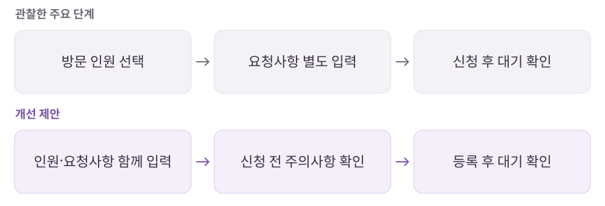
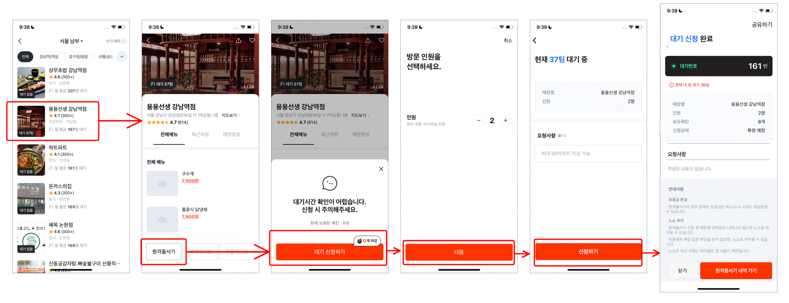
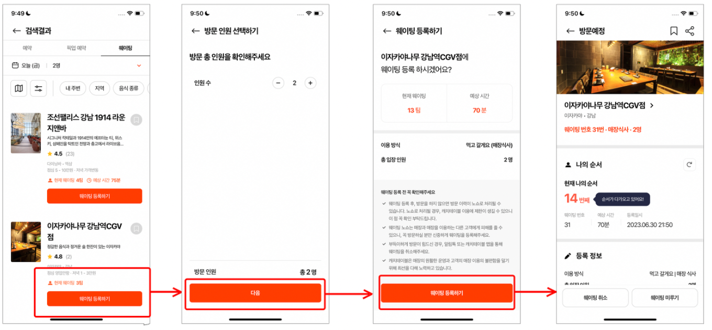

테이블링
원격 줄서기의 신청 단계를 줄이면서 노쇼는 어떻게 방지할까?
매장에 도착하기 전 대기를 등록하고 순서를 확인하는 원격 줄서기 서비스.
학습 목적캐치테이블과 대기 등록 단계·주의사항 안내 시점을 비교하고, 현장 확정 코드가 필요한 이유를 살폈습니다. 매장 상태 표시·사진 리뷰·악성 리뷰 대응과 사용자 인증 방식도 정리했습니다.
개인 학습 기록 · 관찰한 경험, 기획 의도에 대한 해석, 개선 제안을 구분해 정리했습니다. 수치·요금·정책은 분석 당시 조사한 자료이며 현재 기준이나 직접 만든 성과가 아닙니다.
01사용자와 해결 방향
누구를 위한 서비스인가매장 앞에서 오래 기다리고 싶지 않은 방문자와 대기·노쇼를 관리해야 하는 매장.
Why · 사용자가 찾는 이유
원하는 식당을 이용하고 싶지만 매장 앞에서 언제 들어갈지 모른 채 기다리고 싶지 않다. 매장은 대기 순서를 관리하고 실제 방문하지 않는 신청을 구분할 필요가 있다.
What · 제공 경험과 해결 방식
방문자는 도착 전에 줄을 서고 대기 순서와 알림을 확인하며 시간을 활용할 수 있다. 매장은 대기 명단과 현장 도착 확인으로 호출·입장 순서를 관리한다.
현장 대기 시간을 다른 활동으로 전환
원문에서 참고한 평균 대기 55.2분을 문제 배경으로 삼았다. 원격 대기 외에 순서 미루기, 남은 팀·예상 시간 안내, 카카오톡 등 연동 알림과 포장 주문·결제까지 이용 범위를 살폈다.
02핵심 기능과 벤치마킹
- 원격 줄서기
- 매장 도착 전에 대기 시작.
- 순서·알림
- 남은 대기와 입장 시점을 안내.
- 현장 확정 코드
- 원격 신청자가 실제 도착했는지 확인하는 노쇼 대응 장치.
비교해서 살펴본 지점
- 캐치테이블
- 인원 선택에서 웨이팅 등록·정보 확인까지의 전환과 주의사항 안내 시점을 비교.
경쟁 서비스의 등록·운영 모델 비교
당시 직접 센 화면 전환과 2023년 자료를 비교한 기록이다. 수치의 조사 방식이 서로 달라 현재 점유율·성능의 비교로 사용하지 않는다.
| 항목 | 테이블링 | 캐치테이블 |
|---|---|---|
| 등록 흐름 | 매장→원격 줄서기→대기 신청→인원→요청사항→신청→대기 확인 | 매장→인원→등록→대기 확인 |
| 전환·안내 | 6회로 기록. 등록 후 주의사항 확인 | 4회로 기록. 등록 전 주의사항 확인 |
| 탐색 편의 | 세부 지역 설정 | 매장 상세 필터 |
| 이용자 조사 | 63.6%, 주요 고객 2030 | 65.4%, 주요 고객 2030 |
| MAU · 2023.10 | 63.1만 | 125.2만 |
| 수익 모델 · 당시 | 월 99,000원 사용료 | 월 예약 건수에 비례한 수수료 |
03사용자 흐름과 기획 의도
인원과 요청사항을 한 단계로 묶는 제안

관찰한 경험
- 현장 코드 입력을 도착 확인·노쇼 방지 장치로 해석하고, 캐치테이블과 신청 흐름을 비교했습니다.
- 대기 인원과 예상 시간, 휴무·준비 중 상태, 사진 리뷰의 충분성을 살펴봤습니다.
두 서비스의 대기 등록 비교

크게 보기 ↗
크게 보기 ↗왜 이렇게 설계했을까 · 나의 해석
- 원격 대기의 가치는 기다리는 장소를 바꾸는 데서 끝나지 않고, 지금 방문할 수 있는지 예측하게 하는 데 있다고 봤습니다.
- 신청 이전에 알아야 하는 주의사항과 신청 후 확인할 상태를 구분할 필요가 있다고 정리했습니다.
04문제와 개선 제안
Pain Point · 걸리는 지점
- 인원 선택과 요청사항이 나뉘어 대기 등록 과정의 화면 전환이 많았다.
- 휴무·준비 중 상태를 매장에 들어가야 확인할 수 있었다.
- 사진 리뷰가 부족해 매장 선택의 근거가 제한적이었다.
내가 바꿔본다면
- 인원 선택과 요청사항 입력을 묶어 화면 전환 줄이기.
- 목록에서 휴무·준비 중 상태를 표시하고 사진 리뷰 작성을 유도하는 장치 검토.
- 리뷰 등록 시 비방·악성 게시물 기준과 조치 안내.
05장점과 아쉬운 지점
좋았던 점
- 현장에서 기다리는 대신 이동과 다른 활동 중 대기를 관리할 수 있다.
아쉬운 점 · 더 살필 점
- 대기 등록의 편리함과 매장의 노쇼·리뷰 관리 부담을 함께 다뤄야 한다.
대기 상태·후기·취소에서의 아쉬움
매장에 따라 예상 시간이 없고 남은 팀 수만 보이는 점, 사진 리뷰의 부족, 상세에 들어가야 아는 휴무·준비 중 상태를 기록했다. 이용자 반응에서는 편리한 호출과 함께 취소의 불편·수익구조 변경에 대한 부담, 업주 입장에서는 익명 악성 리뷰의 위험을 살폈다.
주변 상권으로 이어지는 영향
트렌드코리아2024가 다룬 2030의 식사 전 과정 중시와 웨이팅 앱 성장을 참고했다. 비교 사례인 캐치테이블 이용 매장 런던 베이글 뮤지엄은 평일 대기 300팀 이상, 입점 후 3개월간 롯데월드몰 1층 매출 약 30% 증가라는 당시 자료로 살폈다. 테이블링의 직접 성과가 아니라 대기 중 주변 소비에 대한 관찰이다.
06내가 주목한 점
리뷰와 인증을 위한 예방 기준
- 리뷰 정책
- 사진 작성 포인트·유도 장치, 프로필 노출을 통한 부분 실명성, 등록 전 악성글 정의·경고·후속 조치 안내를 제안.
- 인증 학습
- 점유 인증은 수단의 보유, 실명 인증은 신원의 실재, 본인 인증은 실제 이용자와 신원의 연결이라는 관점으로 구분. 원문의 “가장 높은 수준”은 모든 상황에 적용되는 절대 순위로 제시하지 않음.
- 상태 안내
- 휴무·준비 중 매장은 목록 라벨로 구분하거나 제외해 불필요한 진입 방지. 입력 단계를 줄이되 현장 확정 코드는 노쇼 방지를 위한 별도 상태로 유지.
기획에 가져갈 기준
- 입력 단계 통합이 가능한지 보되, 신청 전 알아야 할 주의사항은 앞에 둘 것.
- 신청과 현장 도착 확인은 서로 다른 상태로 설계할 것.